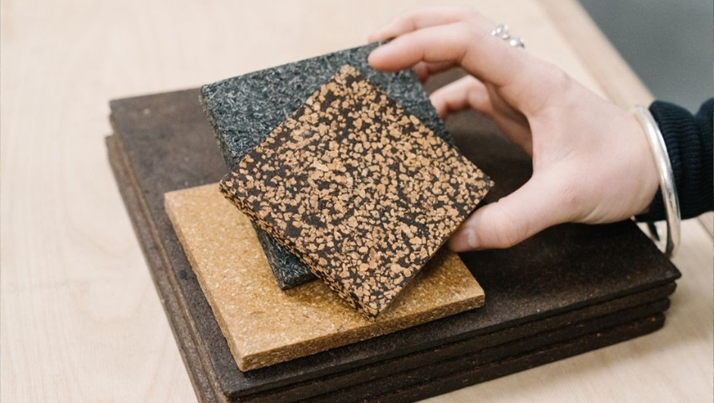

¿Te enteraste de que ya existen edificios construidos con hongos y restos de alimentos? Biohm es una de las empresas que se propuso fabricar biomateriales de construcción a base de micelio y desechos alimenticios para revolucionar las infraestructuras urbanas. La construcción, actualmente, representa el 39% de las emisiones de carbono, y eso, sumado al 28% que genera la refrigeración, calefacción e iluminación de las viviendas e infraestructuras, deja más de un 50% de impacto negativo en el planeta.
El mundo nos está pidiendo un cambio, y qué mejor que construirlo, literalmente, de manera sostenible. Inspirado en la biomimesis de la naturaleza, Biohm tiene la misión de transformar la industria de la construcción, desde sus recursos hasta la producción, y transicionar hacia un sistema sustentable. Con este propósito, Biohm diseña pensando en la deconstrucción y realiza alianzas locales para aprovechar los desechos naturales como recursos, incursionando en materiales alternativos que superan a los materiales sintéticos, para construir ecológicamente.
Por ejemplo, ¿qué pasaría si los próximos edificios capturaran el carbono en vez de generarlo? Esto ya está sucediendo: los hongos resultaron ser la respuesta para la construcción de carbono negativo. Biohm cultiva los hongos en paneles de aislamiento utilizando residuos agrícolas para dotarlos de las propiedades necesarias. El cuerpo del hongo, comúnmente llamado micelio, cumple una importante función en los bosques, ya que permite que las plantas se conecten entre sí.
Las ventajas de aplicar este biomaterial en la construcción son muchísimas. En primer lugar, no liberan compuestos tóxicos, por lo que son más seguros y saludables, tanto para el planeta como para nosotrxs. Además, evitan la pérdida del calor y la propagación del fuego, y funcionan mejor como aislantes de sonido.
El otro biomaterial que fabrica Biohm es a partir de residuos alimenticios y lleva el nombre de Orb. Al ser 100% natural, sus ventajas se encuentran en su permeabilidad, y evita la acumulación de humedad y gases tóxicos para el edificio. Además es un material flexible y moldeable en formato 3D para todo tipo de aplicaciones.
La filosofía de Biohm consiste en trabajar en conjunto con la naturaleza para innovar en la construcción de un entorno regenerativo y sostenible, y dejar una huella positiva con cada edificio. Crear ciudades sostenibles está en nuestras manos.